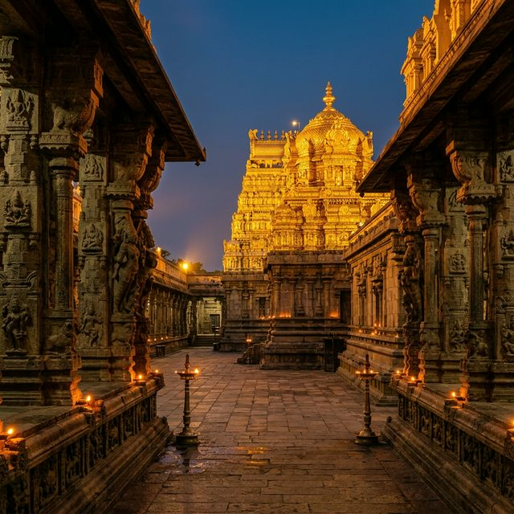

Chidambaram
Chidambaram, Tamil Nadu
The Sacred Legacy

The Chidambaram Nataraja Temple is where Lord Shiva manifested his cosmic dance (Ananda Tandava) the dance that represents the eternal cycle of creation, preservation, and destruction of the universe. This is one of the Pancha Bhuta Stapams the five temples representing the five elements representing Akash (Space/Ether).
The temple's most profound mystery is the Chidambara Rahasya a golden curtain that, when drawn aside, reveals... nothing. Just space. The formless infinite Brahman the ultimate reality beyond all idols.
The Cosmic Dance
The Nataraja icon here is the most sacred in Hinduism Shiva dancing in a ring of fire on the demon of ignorance. Each element of the pose carries deep cosmic symbolism: drum=creation, flame=destruction, raised foot=liberation.
The Chidambara Rahasya
Behind a golden curtain, pilgrims expect an idol but find only space. The secret: God is space itself. The formless, infinite consciousness that pervades all existence. This is Hinduism's greatest philosophical revelation given through architecture.
The Golden Roof
The Kanaka Sabha (golden hall) is roofed with 21,600 golden tiles representing the number of human breaths per day a precise cosmological statement about the relationship between human life and divine cosmos.
Classical Dance Festival
The Natyanjali Festival (Mahashivaratri) is the world's premier classical Indian dance festival. Hundreds of dancers worship Lord Nataraja the supreme patron of all dance.
"In Chidambaram, Shiva dances the universe into existence and when the curtain parts, we see that the infinite space of our own consciousness is His greatest shrine."
How to Reach
Chennai Airport 0 km, Tiruchirapalli 0 km
Chidambaram Railway Station 0 km
From Chennai 0 km, Pondicherry 0 km
November to February